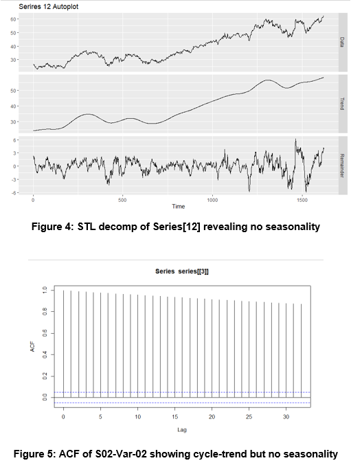

Forecasting Time-Series
Introduction
The following report entails forecasting two-variables on six unknown time-series with an ARIMA model, using MAPE as an error metric. Time-series were processed for outlier replacement, seasonal-trend decomposition, missing value imputation and tested for stationarity. Models were trained via a 80/20 test-train split, residuals were tested for zero-mean and MAPE was calculated for each time-series.
It is important to note that the historical data provided for forecasting does not specify the metric of time (days, years, etc). Yet 140 datapoints for each time-series were to be forecasted and submitted to the professor for evaluation. The feedback from the professor can be seen at the bottom of the report.
Data Extraction
A screenshot of the data received is below.
This includes six series, from which two variables each were specified for analysis resulting in 12 univariate time-series models. The variables specified for each series were as follows.
The data was extracted using basic Tidyverse functions
Exploratory Data Analysis
Individual time-series were plotted to visualize their components specifically seasonal patterns, trends, and cycles. No seasonality was found. In addition this gave a good understanding of how messy the data might be.

We concluded that some time-series had very obvious outliers, and no obvious seasonal patterns or cycles.
Data Processing
The data was manipulated in order to achieve stationarity. This was tested using the Augmented Dickey-Fuller (ADF) test. For time-series with high variability log tranformations were taken to stabilize variance. Next outliers were linearly interpolated instead of eliminated to ensure forecast integristy.

Each time-series that did not pass the ADF test was differenced in order to stabilize the mean and variance. For example series three and four were as follows:

The series four p-value was less than 0.05 therefore we fail to reject the null hypothesis whereas the p-value for series three was greater than 0.05 so we fail to reject the null hypothesis. Therefore series three is non-stationary and needs to be differenced to reduce variance.

The differenced series three rejects the null hypothesis therefore is statistically evident to be stationary.
Modeling
The data was split into 80/20 training/testing sets. To model the data we used the Auto Regressive Integrated Moving Average method. An algorithm was created to optimize the p, d and q parameters for each model. The algorithm accepts a list of time-series, iterates over the combinations of parameters and retains the calculated AIC value. Finally the parameters corresponding with the lowest AIC value is returned for each one of the time-series.
Modeling
The data was split into 80/20 training/testing sets. To model the data we used the Auto Regressive Integrated Moving Average method. An algorithm was created to optimize the p, d and q parameters for each model. The algorithm accepts a list of time-series, iterates over the combinations of parameters and retains the calculated AIC value. Finally the parameters corresponding with the lowest AIC value is returned for each one of the time-series.
The residual, residual ACF and Residual histogram were analyzed for each model and the Ljung-Box Test was ran for each model. Each series passed except one.

The outlier was imputed using the average from the surrounding data. Following the imputation the series was retested and passed the Ljung-Box Test.

Results
Forecasts were performed on 140 equally spaced time periods for each series using ARIMA models with optimal tuning parameters. The selected models provided errors which can be seen below, and sufficient p-values to pass the Ljung Box test proving statistical evidence that any error from the model occured from white noise. It is important to note that the historical data provided for forecasting does not specify the metric of time (days, years, etc).
Conclusions
Forecasts were performed on 140 equally spaced time periods for each series using ARIMA models with optimal tuning parameters. The selected models provided errors which can be seen below, and sufficient p-values to pass the Ljung Box test proving statistical evidence that any error from the model occured from white noise. It is important to note that the historical data provided for forecasting does not specify the metric of time (days, years, etc). Below is the feedback from our forecasts and MAPE values provided by the professor.

Special thanks to Layla Quinones, Sergio Ortega, Jack Russo and Neil Shah for teaming up to create an excellently executed final project.
Github Repository